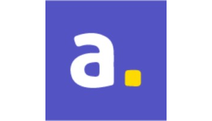

Work Experience
 Coffeenauts
Senior Software Engineer
oct/2020 - on going
Coffeenauts
Senior Software Engineer
oct/2020 - on going
-
New Unannounced Title
- Built a unique rendering system capable of downsampling models at runtime, complemented by a compatible post-processing stack.
- Implemented advanced gameplay systems and custom rendering techniques not available in standard Unity URP.
-
Spacelines from the Far Out
- Implemented online multiplayer using the Photon networking platform.
- Developed custom shaders to enhance the 3D artists' workflow, expand shader options beyond the default Unity Standard Shader, and optimize video memory usage.
- Created core supporting systems and tools to track assets and metadata, improving resource usage.
- Integrated Xbox Live and Steamworks, and ported the game to these platforms.
- Maintained and configured company infrastructure, including version control systems and project management tools.
Samsung
Security Researcher Intern
jan/2020 - aug/2020
- Researched and developed defensive security solutions to protect Samsung Android devices.
- Focused on reducing attack surface and identifying exploits.

Aware
Full-stack Developer
apr/2019 - dez/2019
- Developed backend server using TypeScript to build ORM queries and serve APIs.
- Built a framework to export reports from a Postgres database.
- Developed frontend Angular app for tracking cargo routes, utilizing Google Maps for visualization.
 EiTV
iOS Developer Intern
jan/2018 - aug/2018
EiTV
iOS Developer Intern
jan/2018 - aug/2018
- Developed a custom video player for m3u8 playlists on iOS, streaming video using the company's proprietary API in Swift.
Academic Experience
Unicamp
Bachelor's Degree in Computer Science
feb/2015 - jun/2020
- The curriculum included courses in economics and management, physics, mathematics, and specialized computer science subjects
- Programming languages.
- Operating systems.
- Computer networks.
- Computer graphics.
- Databases.
- Artificial intelligence.
- Software engineering.
- Computer architecture.
- etc.
- The theoretical knowledge is complemented by dynamic practical activities in laboratories where we experienced real-world application of our coursework.
Institute of Computing
Teaching Assistant
aug/2017 - dec/2017 & aug/2018 - dec/2018
- Assisted students with assignments and test preparation for two courses.
- On an introductory course about C programming and simple algorithms.
- On an advanced course about assembly language and processor inner workings.
 Computer Systems Laboratory (LSC)
Undergraduate Researcher
feb/2019 - jun/2020
Computer Systems Laboratory (LSC)
Undergraduate Researcher
feb/2019 - jun/2020
- Implemented cutting-edge techniques to approximate CPU simulations, enhancing performance and power consumption at the cost of accuracy.
- Ported MIPS approximations to RISC-V to demonstrate architecture-independent benefits.
 Student Body for Sport Practice (AAACEC)
Head of Events
oct/2016 - oct/2017
Student Body for Sport Practice (AAACEC)
Head of Events
oct/2016 - oct/2017
- Managed a team of 20, organizing university-wide events.
Speaking
Lua + LÖVE
sep/2017
- Conducted an introductory workshop on Lua and game development using the LÖVE framework, including a step-by-step creation of an Alien Invaders clone.
Game Boy Advance
The technology behind the golden age of portables
aug/2019
- Delivered a comprehensive talk inspired by Michael Steil’s "The Ultimate Game Boy Talk," covering the GBA’s CPU, memory layout, DMA usage, and PPU rendering techniques.